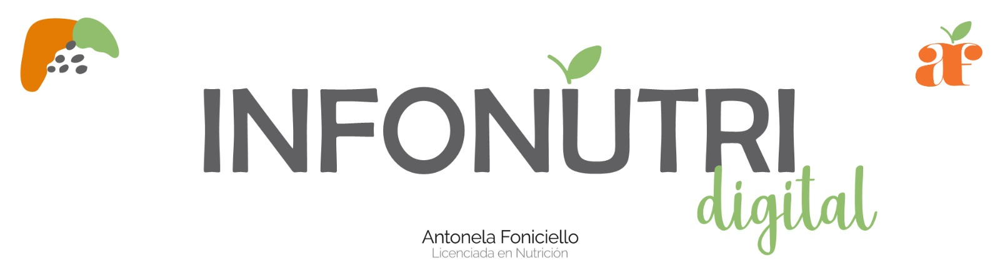
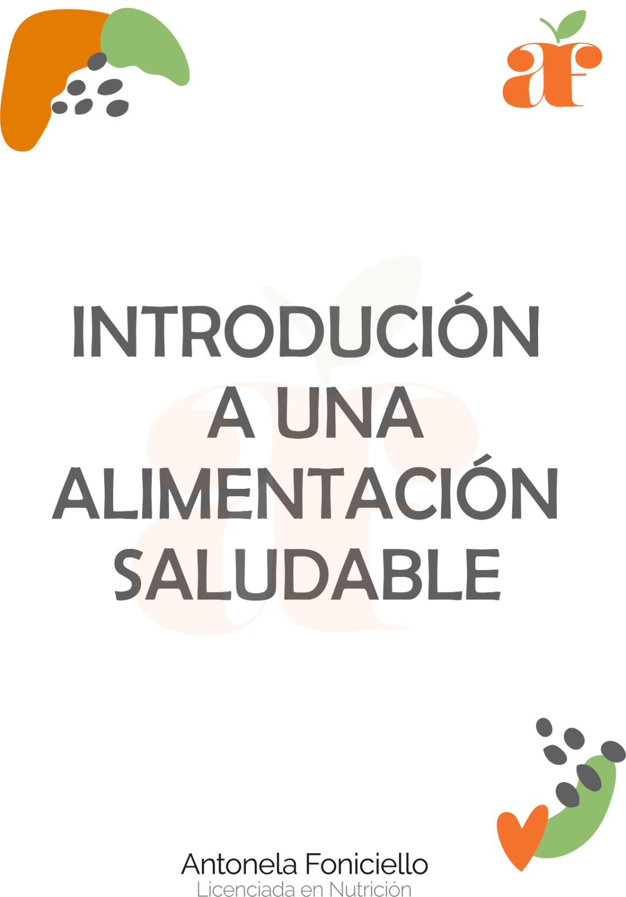

Infoproductos útiles a la hora de llevar una alimentación saludable (no reemplazan una consulta profesional)

¡NUEVO!
Introducción a una Vida Saludable
Información básica sobre los pilares de una alimentación saludable, tipos de nutrientes y cómo lograr una comida completa.

¡NUEVO!
Calendario de Comidas
Calendario de comidas completas para cuatro semanas con recetas. (No apto vegetariano/vegano/sin TACC)